ES 667 · Deep Learning · the maths before the VAE
KL divergence and variational inferenceBuilt slowly on a coin, two bumps and a few shapes in a plane
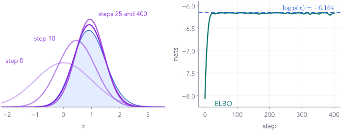
A simple bell curve $q$ (purple) slides onto a posterior that has no formula (blue), while a number called the ELBO climbs to $\log p(x)$.
By the end of today, every word of that sentence will mean something precise.
Nipun Batra · IIT Gandhinagar
The plan
One problem, two tools, one method, and where it leads
Every piece of the VAE's loss appears here first, on toys small enough to check by hand.
Part 1 of 8
A reminder: prior, likelihood, posterior
Variational inference approximates exactly one thing: a posterior. So before any new maths, rebuild Bayes' rule on the simplest data there is: ten tosses of a coin.
- 1Bayes: prior, likelihood, posterior
- 2Why the posterior is hard
- 3Averages from samples
- 4KL divergence
- 5Variational inference and the ELBO
- 6Climbing the ELBO: gradients through samples
- 7Beyond one number
- 8Many data points: towards the VAE
The data
Ten tosses: 8 heads, 2 tails
What is this coin's chance of heads? Call it $\theta$.
The obvious answer: $8/10 = 0.8$. That is the maximum-likelihood estimate.
But ten tosses do not rule out $\theta = 0.7$, or even $0.5$. We want a whole distribution over $\theta$: how strongly we believe each value.
Bayes' rule turns "what I believed before" and "what I saw" into "what I believe now".
Start small: pretend there are only three possible coins
Bayes' rule as a table you can do by hand
| coin $\theta$ | prior $\cz{p(\theta)}$ | likelihood $\cdec{p(x\mid\theta)} = \theta^8(1-\theta)^2$ | joint: prior × likelihood | posterior $\cx{p(\theta\mid x)}$ |
|---|---|---|---|---|
| 0.2 | 1/3 | $0.016 \times 10^{-4}$ | $0.005\times 10^{-4}$ | 0.0002 |
| 0.5 | 1/3 | $9.77 \times 10^{-4}$ | $3.26\times 10^{-4}$ | 0.127 |
| 0.8 | 1/3 | $67.11 \times 10^{-4}$ | $22.37\times 10^{-4}$ | 0.873 |
| sum | 1 | $\hl{ 25.63\times 10^{-4}}$ | 1 |
Add up the joint column: $25.63\times10^{-4}$. Keep this number; it has a name.
Posterior = joint ÷ sum. The coin with $\theta = 0.8$ now has 87% of our belief. The sum we divided by is $p(x)$, the evidence.
The same table, in symbols
Bayes' rule, and the troublemaker at the bottom
The evidence is the joint, added up over every possible value of the hidden quantity. Watch it: it is the whole difficulty.
Every value of $\theta$ at once
Prior × likelihood, rescaled: the posterior
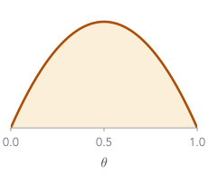
a gentle preference for fair coins
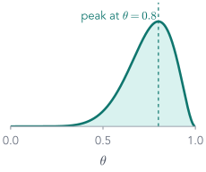
what the ten tosses say
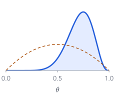
(prior dashed, for comparison)
Multiply the two curves point by point, rescale to area 1. Posterior mean 0.714: between the prior's 0.5 and the data's 0.8.
Try it
Toss by toss, the posterior sharpens
8 heads, 2 tails
posterior: $\mathrm{Beta}(2 + \text{heads},\ 2 + \text{tails})$
$= \mathrm{Beta}($10, 4$)$
posterior mean: 0.714
Each head multiplies in one more $\theta$, each tail one more $(1-\theta)$. More tosses: a narrower posterior.
For this prior, we got lucky
The evidence has a formula
$B(a, b)$, the Beta function, is a tabulated integral: $B(10, 4) = \dfrac{9!\;3!}{13!}$. So $p(x) = 0.00210$ and $\log p(x) = −6.167$.
Change the prior slightly and the luck runs out. That is Part 2.
The same five words, next lecture
The coin is a tiny version of the VAE's problem
| word | the coin | the VAE |
|---|---|---|
| hidden quantity | $\theta$, the chance of heads | a code $z$ of a few numbers |
| data $x$ | ten tosses | one image: 784 pixels |
| prior | $\mathrm{Beta}(2, 2)$ | $p(z) = \N(0, I)$ |
| likelihood | $\theta^8(1-\theta)^2$ | $p(x\mid z)$: the decoder, a neural network |
| posterior | $\mathrm{Beta}(10, 4)$ | "which codes could have made this image?": no formula |
| evidence | $6\,B(10, 4) = 0.00210$ | $\int p(z)\,p(x\mid z)\,dz$: no formula |
The VAE needs a posterior for every training image, and it never has a formula. This lecture builds the tool for that.
Part 2 of 8
When the evidence has no formula
Keep the same ten tosses. Change only the prior, to one that looks like a tiny decoder. Bayes' rule still holds, but the integral at its bottom can no longer be done. That one change is the whole reason variational inference exists.
- ✓Bayes: prior, likelihood, posterior
- 2Why the posterior is hard
- 3Averages from samples
- 4KL divergence
- 5Variational inference and the ELBO
- 6Climbing the ELBO: gradients through samples
- 7Beyond one number
- 8Many data points: towards the VAE
Same coin, a different story for $\theta$
A one-number decoder
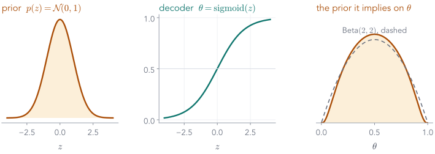
Draw a hidden number $z \sim \N(0, 1)$, squash it: $\theta = \mathrm{sigmoid}(z)$, toss ten times with that $\theta$.
The VAE's story in miniature: a prior on a code, then a network that turns the code into probabilities.
The prior it implies on $\theta$ is almost Part 1's $\mathrm{Beta}(2, 2)$: nearly the same beliefs.
The hidden quantity is now $z$, a real number. From here on, $z$ is what we infer.
Bayes' rule, exactly as before
The posterior over $z$
The top: easy
A bell curve times a few sigmoids. Pick any $z$ and it is one line of arithmetic.The bottom: no formula
No table of integrals has this one. No trick turns it into a Beta function: the bell curve and the sigmoids do not combine."Intractable" means exactly this: we can write the integral down, but not work it out.
What we can compute, and what we cannot
Any point of the curve, but not its area
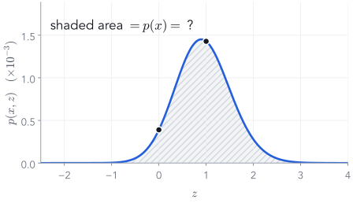
def log_joint(z): # log p(x, z), any z return (Normal(0, 1).log_prob(z) + 8 * F.logsigmoid(z) + 2 * F.logsigmoid(-z))
The two dots: $\log p(x, z) = −7.85$ at $z = 0$ and $−6.552$ at $z = 1$.
The shaded area is $p(x)$. To get it we would have to add up the curve everywhere.
We can evaluate the joint at any point. We cannot get its area. Variational inference will need only the first.
In one dimension, there is a way out
Add up thin rectangles
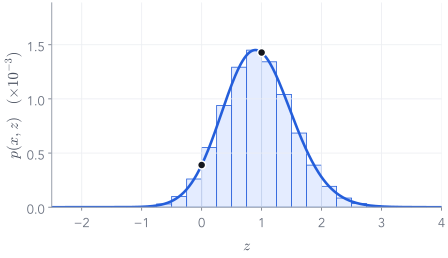
12,001 values of $z$ from $-6$ to $6$, spacing $\Delta z = 0.001$ (26 drawn here):
$\log p(x) = −6.164$ nats.
Divide the curve by it, and we have the exact posterior: mean 0.94, standard deviation 0.586.
We keep this exact answer only to check every approximation in this lecture. No approximation will be allowed to use it.
In many dimensions, the way out closes
The grid explodes with the number of hidden numbers
| numbers in $z$ | grid points (100 per axis) | example |
|---|---|---|
| 1 | 100 | this coin |
| 2 | $10^{4}$ | a 2-number VAE code |
| 4 | $10^{8}$ | |
| 10 | $10^{20}$ | 3 million years at $10^6$ per second |
| 32 | $10^{64}$ | a modest VAE code |
Intractable twice over: no formula, and far too many terms to add up.
When the posterior cannot be computed, approximate it
Three ways, on the same posterior
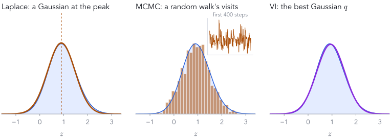
Laplace: a Gaussian fitted to the curvature at the peak, $z = 0.9$. Fast; sees only the peak.
MCMC: a random walk that visits $z$ in proportion to the posterior. Exact in the long run; slow.
VI: the closest member of a simple family, $\N(0.94,\ 0.58^2)$. Inference becomes optimisation.
The rest of today is only the third. It needs two tools first: averages from samples, and a number for "close".
Part 3 of 8
Averages, and estimating them from samples
Variational inference's loss is an average over a distribution. We will almost never compute it exactly; we will estimate it from a handful of random draws. Here is why that works, and how noisy it is.
- ✓Bayes: prior, likelihood, posterior
- ✓Why the posterior is hard
- 3Averages from samples
- 4KL divergence
- 5Variational inference and the ELBO
- 6Climbing the ELBO: gradients through samples
- 7Beyond one number
- 8Many data points: towards the VAE
Notation for the rest of the lecture
$\E$ means "average over"
The subscript says which distribution we average under. It will matter: KL and the ELBO are both averages, and the choice of subscript is the key decision in VI.
Monte Carlo in one picture (from the PML course)
Throw darts at a square to estimate $\pi$
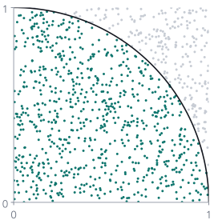
Throw darts uniformly at the unit square. The quarter circle covers $\pi/4$ of its area, so
Here: 771 of 1,000 inside, so $\pi \approx 3.084$.
| darts | 10 | 100 | 1,000 | 10,000 | 100,000 |
|---|---|---|---|---|---|
| spread over 6 runs | 0.643 | 0.14 | 0.052 | 0.008 | 0.005 |
An area, which is an integral, became an average of random yes/no answers. That is the whole idea of Monte Carlo.
The one idea we need: Monte Carlo
Replace the integral by an average of draws
Example: $q = \N(1,\ 0.5^2)$ and $f(z) = z^2$. Exact answer: $\E[z^2] = \mu^2 + \sigma^2 = 1 + 0.25 = 1.25$.
| draw $s$ | 1 | 2 | 3 | 4 | 5 | average |
|---|---|---|---|---|---|---|
| $z_s$ | 1.02 | 1.68 | 1.61 | 0.74 | 0.85 | |
| $f(z_s) = z_s^2$ | 1.040 | 2.822 | 2.592 | 0.548 | 0.722 | 1.545 |
Five draws: 1.545 instead of 1.25. Not bad, not great. More draws?
Try it
Draw more, get closer
draws so far: 5
latest $z$: —
estimate —
exact: 1.25
More draws: closer to 1.25. The teal band is where 95% of runs end up after $S$ draws; it narrows like $1/\sqrt{S}$.
How noisy is the estimate?
The error shrinks like $1/\sqrt{S}$
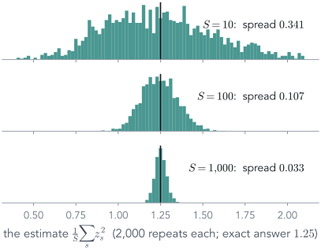
One draw of $z^2$ has a spread (standard deviation) of 1.061.
An average of $S$ draws has spread $1.061/\sqrt{S}$: 0.335, 0.106, 0.034 for $S$ = 10, 100, 1,000.
Measured over 2,000 repeats: 0.341, 0.107, 0.033.
Centred on the right answer (unbiased), but noisy: 100 times more draws buy 10 times less noise.
In code
Three lines, in any number of dimensions
mu, sigma = 1.0, 0.5 z = mu + sigma * torch.randn(1000) # 1,000 draws from q estimate = (z**2).mean() # about 1.25
Draw from $q$: standard noise, stretched by $\sigma$ and shifted by $\mu$. Remember this line: it returns in Part 6.
Average $f$: evaluate $f$ at each draw and take the mean. No integral anywhere.
The catch: we need draws from the distribution we average under. For a $q$ we chose, easy. For the posterior, that is the very problem we started with.
So variational inference will arrange for every average to be under $q$, never under the posterior.
Part 4 of 8
KL divergence: how far apart are two distributions?
Variational inference wants a simple $q$ close to the posterior. "Close" needs a number. Build it slowly, from a betting game over two outcomes; then move to bell curves.
- ✓Bayes: prior, likelihood, posterior
- ✓Why the posterior is hard
- ✓Averages from samples
- 4KL divergence
- 5Variational inference and the ELBO
- 6Climbing the ELBO: gradients through samples
- 7Beyond one number
- 8Many data points: towards the VAE
Two distributions over the same two outcomes
The data says 80/20. The model says 60/40.
$P$: the data
$Q$: our model
A dataset of handwritten 1s and 7s, 80% 1s. The model believes 60/40. How wrong is it, as one number?
A betting game
Which model makes the real data more likely?
Ten digits from the data: eight 1s, two 7s. Each model gives each digit a probability; multiply them.
The truth wins, by a factor of $0.0067 / 0.0027 = 2.5$. KL will measure this gap, per digit.
Products of many small numbers are awkward
Surprise $= -\log p$, and why the log
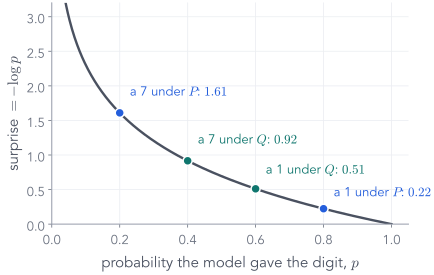
Which is more surprising: snow in Kashmir in January, or snow in Gandhinagar? What should "surprise" do?
1 · a certain event: no surprise. $-\log 1 = 0$.
2 · rarer means more surprising. $-\log p$ grows as $p$ shrinks.
3 · two independent digits: probabilities multiply, surprises should add. Only the log turns products into sums.
So the betting-game product becomes a sum of surprises, one per digit. Natural log, so the unit is the nat.
Our two digits, scored both ways
The surprise table
| outcome | $P$ | $Q$ | surprise if you believe $P$ | surprise if you believe $Q$ |
|---|---|---|---|---|
| a 1 | 0.8 | 0.6 | $-\log 0.8 = 0.223$ | $-\log 0.6 = 0.511$ |
| a 7 | 0.2 | 0.4 | $-\log 0.2 = 1.609$ | $-\log 0.4 = 0.916$ |
Average surprise, when you believe the truth
Entropy: $H(P) = 0.500$ nats per digit
The weights are how often each digit really appears: eight in ten, two in ten. In Part 3's language, an average under $P$: $H(P) = \E_{x\sim P}[-\log P(x)]$.
Even the perfect model is surprised by 0.500 nats per digit on average: the data are random.
Same data, a different scorer
Cross-entropy: $H(P, Q) = 0.592$ nats per digit
Still weighted by $P$
the digits still come from the real data: eight 1s, two 7s.Scored by $Q$
each digit's surprise now uses the model's probability.Believing the wrong model costs more surprise on the same data: 0.592 instead of 0.500.
The extra surprise
KL divergence = cross-entropy − entropy
together: $H(P, Q) = 0.592$ (more precisely $0.5004 + 0.0915 = 0.5919$)
KL is the part of the surprise that comes only from using the wrong model. And it is the betting game's gap: $\tfrac{1}{10}\log 2.5 = 0.092$.
Another way to read the same numbers (from the PML course)
In bits: KL is the extra length of the wrong code
| symbol | true $p$ | best code for $p$ | length $= -\log_2 p$ | code built for $q$ = uniform | length |
|---|---|---|---|---|---|
| A | 0.5 | 0 | 1 | 00 | 2 |
| B | 0.25 | 10 | 2 | 01 | 2 |
| C | 0.125 | 110 | 3 | 10 | 2 |
| D | 0.125 | 111 | 3 | 11 | 2 |
| average under $p$ | $H(p) = 1.75$ | $H(p, q) = 2.0$ |
Coding $p$'s data with $q$'s code costs $2.0 - 1.75 = 0.25$ extra bits per symbol: $\KL(p\,\|\,q)$ in bits. Surprise is code length.
Part 3's tool, already useful
KL is an average, so samples can estimate it
Notice what this needs: draws from the first argument, and both probabilities at each draw. Remember that for VI.
Why KL can never be negative
One picture: $\log r$ lies under its tangent
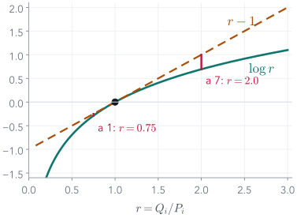
Let $r = Q_i / P_i$. The curve $\log r$ never rises above the line $r - 1$.
Equality only when every $r_i = 1$: $Q = P$. This one inequality is what makes the ELBO a lower bound in Part 5.
What the number means
KL is how fast evidence piles up
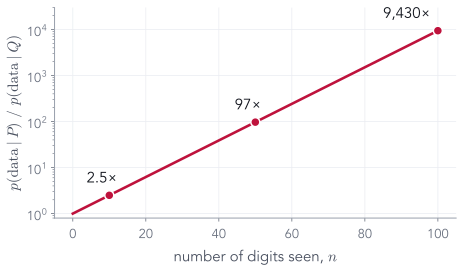
After 10 digits the truth is 2.5× more likely; after 50, 97×; after 100, 9,430×.
A small KL means the two models are hard to tell apart from data; a large one means a few samples settle it.
Not a distance
Swap the arguments, get a different number
$0.105 \neq 0.092$: KL is not symmetric. "How wrong is $Q$ about $P$" differs from "how wrong is $P$ about $Q$".
Push $q \to 0$ and $\KL(P\|Q) \to \infty$. Never give zero probability to something that happens.
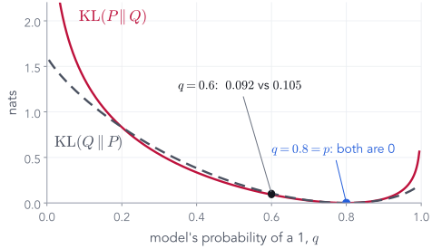
The order matters, sharply
A model that "forgets" 7s
Truth $P = (0.8, 0.2)$. A model $Q' = (0.99, 0.01)$ that almost never expects a 7.
Whoever sits first does the weighting. $\KL(P\|Q)$ punishes $Q$ for missing what $P$ does; $\KL(Q\|P)$ barely notices.
Why training code says "cross-entropy"
Cross-entropy = entropy + KL
Lowering cross-entropy can only lower the KL part. So maximum likelihood minimises $\KL(\text{data}\,\|\,\text{model})$: data first.
From bars to bell curves
KL between two bell curves is an area
$p = \N(0, 1)$ fixed (orange). Move $q = \N(\mu, \sigma^2)$ (purple):
shaded area (numerically): 0.818
formula: $\KL(q\|p) = $ 0.818
the other way: $\KL(p\|q) = $ 2.807
Start: $q = \N(1, 0.5^2)$ against $p = \N(0, 1)$. The red area is 0.818 nats one way, 2.807 the other.
The formula, step 1 of 2
Write out the log of the ratio
Three terms. Next: average each one over $z \sim q$.
The formula, step 2 of 2
Average each term over $q$
Moving the centre costs $\tfrac12\mu^2$; a width other than 1 costs $\tfrac12(\sigma^2 - 1 - \log\sigma^2)$. This is the KL term of every VAE.
When there is no formula (from the PML course's VI notebook)
No formula for the KL? Estimate it by sampling
p = MixtureSameFamily(Categorical(torch.tensor([0.5, 0.5])), Normal(torch.tensor([-2., 2.]), torch.tensor([0.5, 0.5]))) kl_divergence(Normal(0., 2.06), p) # NotImplementedError: No KL(p || q) is implemented def kl_via_sampling(q, p, n=100_000): z = q.sample([n]) # draws from the FIRST argument return (q.log_prob(z) - p.log_prob(z)).mean()
Two bumps at $\pm 2$: a mixture. PyTorch has KL formulas for pairs of standard families, not for this pair.
Part 3's Monte Carlo, applied to the definition. For two candidate $q$'s:
| $q$ | sampling | grid |
|---|---|---|
| wide, $\N(0,\ 2.06^2)$ | 2.087 | 2.095 |
| one bump, $\N(-2,\ 0.5^2)$ | 0.693 | 0.693 |
$\KL(q\,\|\,p)$ prefers the one-bump $q$ by a wide margin. Can we then optimise $q$ through these samples? That needs Part 6; first, watch it happen.
Fit one bell curve to two bumps, both ways
The direction of the KL decides what you get
minimise $\KL(p\,\|\,q)$: data first
centre 0 · width 0 · KL 0
minimise $\KL(q\,\|\,p)$: $q$ first
centre 0 · width 0 · KL 0
Data first: cover everything, $\N(0.0,\ 2.06^2)$. $q$ first: pick one bump, $\N(−2.0,\ 0.5^2)$. Mode-covering vs mode-seeking.
Why the two directions behave so differently
Whoever sits first does the weighting
$\KL(p\|q) = \E_{p}\big[\log p - \log q\big]$
Averaged where the data are. Anywhere $p$ has mass and $q$ is tiny, $-\log q$ is huge. So $q$ stretches to cover all of $p$, even the empty middle.$\KL(q\|p) = \E_{q}\big[\log q - \log p\big]$
Averaged where $q$ puts mass. Anywhere $q$ has mass and $p$ is tiny, $-\log p$ is huge. So $q$ avoids the gaps and hides inside one bump.Variational inference will minimise $\KL(q\,\|\,\text{posterior})$: the second kind. Expect $q$ to be cautious, never too wide, often too narrow.
Part 5 of 8
Variational inference: pick the closest simple $q$
We have a posterior we cannot compute (Part 2), averages from samples (Part 3) and a number for "close" (Part 4). Put them together, one move per slide, and the integral we could not do disappears from the problem.
- ✓Bayes: prior, likelihood, posterior
- ✓Why the posterior is hard
- ✓Averages from samples
- ✓KL divergence
- 5Variational inference and the ELBO
- 6Climbing the ELBO: gradients through samples
- 7Beyond one number
- 8Many data points: towards the VAE
Step 1: choose a family of simple shapes
Every bell curve $q(z) = \N(m, s^2)$: two dials
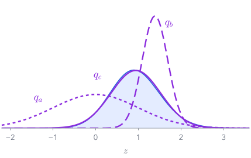
Blue: the coin's posterior over $z$ (Part 2's grid, for checking only). Purple: three members of the family.
Which is closest? Guess first.
| $q$ | $m$ | $s$ | $\KL(q\,\|\,\text{posterior})$ |
|---|---|---|---|
| $q_a$: the prior | 0.00 | 1.00 | 1.897 |
| $q_b$: narrow, at $\log 4$ | 1.39 | 0.30 | 0.627 |
| $q_c$ | 0.94 | 0.58 | 0.002 |
Step 2: of all the bell curves, take the one with the smallest KL to the posterior. That is variational inference.
The goal, written down
Find the $q$ with the smallest KL to the posterior
$\mathcal Q$: the shapes we allow
Gaussians $\N(m, s^2)$. Two numbers to find. (The VAE: a few dozen.)Why $q$ first?
KL averages under its first argument (Part 4). We can draw from $q$; we cannot draw from the posterior (Part 3's catch).What it will do
$q$ first means mode-seeking (Part 4's two bumps): $q$ will hide inside the posterior rather than spread over it.Inference has become optimisation: two numbers, one objective. Before any maths, try it by hand.
Try it
You are the optimiser
Move $q = \N(m, s^2)$ (purple) onto the posterior (blue):
$\KL(q\,\|\,\text{posterior}) =$ 1.897
The best possible: 0.0019 nats, at $m = 0.94$, $s = 0.58$.
We cheated: that readout uses the exact posterior from Part 2's grid. In a real problem there is no grid. Can we score $q$ without it?
The catch
The KL to the posterior contains the evidence
To score $q$ this way we need $p(x)$: the integral of Part 2. We are back where we started.
Four short moves get the evidence out of the way. Watch where $\log p(x)$ goes.
From the KL to the ELBO · move 1 of 4
Write out the KL
From the KL to the ELBO · move 2 of 4
Bayes: the posterior is the joint over the evidence
The joint $p(x,z) = p(z)\,p(x\mid z)$ is Part 2's one line of code. All the difficulty is now in one number.
From the KL to the ELBO · move 3 of 4
Move the evidence to the other side
Why "Evidence Lower BOund"? The last move.
From the KL to the ELBO · move 4 of 4
The KL is never negative, so the ELBO is a lower bound
Our coin, two choices of $q$. The right end, $\log p(x) = −6.164$, is fixed by the model and the data: it does not move when $q$ changes.
the prior
$\N(0.94,\ 0.58^2)$
The total cannot move, so raising the ELBO must shrink the KL. Maximise the ELBO, and $q$ approaches the posterior, without ever computing $p(x)$.
Try it
Move $q$: the ELBO and the gap change, their sum never does
Same dials as before, but now the score is the ELBO, which needs no grid. Push the ELBO up and the gap closes by exactly the same amount.
Check it with numbers you can do by hand
A two-value hidden cause: neat or messy writer?
$z\in\{\text{neat},\text{messy}\}$, prior $\tfrac12, \tfrac12$. Observation $x$: a thick stroke.
$p(x\mid\text{neat}) = 0.8,\quad p(x\mid\text{messy}) = 0.2$
evidence $p(x) = 0.5$ · true posterior $(0.8,\ 0.2)$
Our guess $q = (q_0,\ 1-q_0)$:
| quantity | value |
|---|---|
| $\E_q[\log p(x\mid z)]$ | −0.778 |
| $-\,\KL(q\,\|\,\text{prior})$ | −0.020 |
| $\ELBO$ | −0.798 |
| $+\,\KL(q\,\|\,\text{posterior})$ | 0.105 |
| $\log p(x)$ | −0.693 |
Every row is a sum of two terms you can work out on paper. At $q_0 = 0.8$ the gap is exactly 0.
Unpacking the ELBO · step 1 of 2
The joint is prior times likelihood
Unpacking the ELBO · step 2 of 2
Recognise the second average: a KL to the prior
Two KLs now appear: to the posterior (the gap, not computable) and to the prior (inside the ELBO, by formula). Do not mix them up.
Put the pieces together
The ELBO, in symbols and in words
In the VAE these two terms get names: the reconstruction term and the KL term. Same two terms, a bigger $x$.
Try it
The two terms pull against each other
| explain the data: $\E_q[\log p(x\mid z)]$ | −5.076 |
| $-$ stay near the prior: $\KL(q\,\|\,p(z))$ | 1.715 |
| ELBO | −6.791 |
| $\E_q[\log p(x\mid z)]$ | $\KL(q\,\|\,p(z))$ | ELBO | |
|---|---|---|---|
| $q_a$, the prior | −8.061 | 0.000 | −8.061 |
| $q_b$, narrow at $\log 4$ | −5.076 | 1.715 | −6.791 |
| $q_c$, the best | −5.513 | 0.653 | −6.166 |
The prior explains the data badly; the narrow $q$ explains it best but strays far from the prior. The best $q$ is the compromise.
End of Part 5
Three ways to read the same number
Next: actually climb it, with samples and gradients, and watch $q$ move.
Part 6 of 8
Climbing the ELBO with samples and gradients
The ELBO is an average under $q$. Estimate it from a few draws (Part 3), then climb it by gradient ascent on $m$ and $s$. One step needs care: a gradient through a random draw.
- ✓Bayes: prior, likelihood, posterior
- ✓Why the posterior is hard
- ✓Averages from samples
- ✓KL divergence
- ✓Variational inference and the ELBO
- 6Climbing the ELBO: gradients through samples
- 7Beyond one number
- 8Many data points: towards the VAE
Step 1: estimate the ELBO from draws
Three lines, using only things we can compute
def log_joint(z): # Part 2's one line return (Normal(0, 1).log_prob(z) + 8 * F.logsigmoid(z) + 2 * F.logsigmoid(-z)) q = Normal(0.0, 1.0) # start: q is the prior z = q.sample((S,)) # S draws from q elbo = (log_joint(z) - q.log_prob(z)).mean()
The joint: prior times likelihood, in logs. Any $z$, one line.
Draws from $q$: easy, because we chose $q$.
The ELBO's definition, averaged: $\E_q[\log p(x,z) - \log q(z)]$.
| draws $S$ | estimate |
|---|---|
| 10 | −8.377 |
| 100 | −7.884 |
| 10,000 | −8.064 |
| exact | −8.061 |
No $p(x)$, no grid. With 10 draws the estimate wobbles by about 1.08 nats; that is fine for climbing, as Part 3 promised.
Step 2: the gradient. The subtle part.
The gradient of an average whose draws move
Move $m$ and the draws themselves move. The randomness depends on what we differentiate.
Two standard ways to estimate it from draws: the score function, and reparameterisation.
Way 1
The score function (the log-derivative trick)
Estimate it with draws: average $f(z)\,(z-\mu)/\sigma^2$. Works for any $q$ and any $f$, even an $f$ you cannot differentiate.
Way 2
Reparameterisation: stretch and shift standard noise
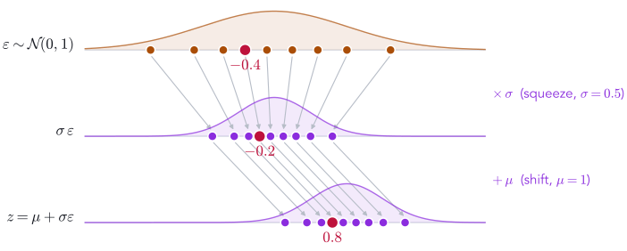
Now the randomness, $\eps$, does not depend on $\mu$. The parameter sits inside $f$'s argument, and the ordinary chain rule applies.
One draw, both ways
$\eps = -0.4$, so $z = 1 + 0.5\times(-0.4) = 0.8$
Score function
Reparameterisation
The exact answer is 2. One draw says $-0.51$ one way and $1.6$ the other. Both are right on average; how noisy is each?
Try it
Same draws, same average, very different noise
draws: 1 (the first is $\eps = -0.4$)
score function: mean −0.51, spread —
reparameterisation: mean 1.60, spread —
exact: 2 (red line); diamonds: running means
Over a million draws: spread 4.65 for the score function, 1.0 for reparameterisation. The score function needs about 22× more draws for the same accuracy.
On the coin's ELBO, the same story
Reparameterisation is the low-noise choice
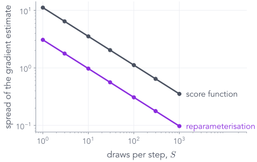
$\partial\,\ELBO/\partial m$ at $q = \N(0, 1)$. Exact: 3.0 (push $m$ up, towards more heads).
Spread of a one-draw estimate: 11.17 (score function) vs 3.08 (reparameterisation).
Both shrink like $1/\sqrt{S}$, but the score function needs about 13× more draws to match.
That is why VI with Gaussians, and the VAE, use reparameterisation. The score function returns when $z$ is discrete and $f'(z)$ does not exist.
In PyTorch (as in the PML course's VI notebook)
rsample, not sample
mu = torch.tensor(1.0, requires_grad=True) sigma = torch.tensor(0.5, requires_grad=True) q = Normal(mu, sigma) z = q.sample() (z**2).backward() # RuntimeError: element 0 of tensors does not require grad # and does not have a grad_fn z = q.rsample() # = mu + sigma * eps, eps ~ N(0, 1) (z**2).backward() mu.grad # 2 z: one reparameterised draw
The toy again: $\mu = 1$, $\sigma = 0.5$, $f(z) = z^2$.
sample() returns a plain number: the graph is cut at $z$, so no gradient can reach $\mu$.
rsample() ("reparameterised sample") draws $\eps$ and returns $\mu + \sigma\eps$: same distribution, but a graph from $z$ back to $\mu$ and $\sigma$.
Writing mu + sigma * torch.randn(...) by hand does exactly the same thing.
Variational inference for the coin
The whole loop: two numbers, gradient ascent on the ELBO
def neg_elbo(q, S=10): z = q.rsample((S,)) # S reparameterised draws return -(log_joint(z) - q.log_prob(z)).mean() m = torch.tensor(0.0, requires_grad=True) # start at the prior log_s = torch.tensor(0.0, requires_grad=True) # s = exp(log_s) = 1 opt = torch.optim.Adam([m, log_s], lr=0.05) for step in range(400): loss = neg_elbo(Normal(m, log_s.exp())) opt.zero_grad(); loss.backward(); opt.step()
The loss: minus the ELBO estimate of two slides ago, now with rsample so gradients flow.
Only $q$ is learned: two numbers. We learn $\log s$ so that $s$ stays positive.
The same three-line loop as fitting any model. 400 steps of 10 draws each: $m = 0.92$, $s = 0.54$. The best Gaussian: $0.94$, $0.58$.
Press play
Watch $q$ climb the ELBO, live
step 0 · $m$ = 0.00 · $s$ = 1.00 · ELBO −8.061 · gap 1.897
Left: $q$ (purple) slides onto the posterior. Right: the ELBO climbs to the dashed $\log p(x) = −6.164$ and stops just under it.
The recorded run, in numbers
Most of the gap closes in 25 steps
| step | $m$ | $s$ | ELBO | gap $= \KL(q\,\|\,\text{posterior})$ |
|---|---|---|---|---|
| 0 · the prior | 0.0 | 1.0 | −8.061 | 1.897 |
| 10 | 0.46 | 0.67 | −6.549 | 0.386 |
| 25 | 0.94 | 0.51 | −6.184 | 0.02 |
| 50 | 0.96 | 0.57 | −6.167 | 0.003 |
| 100 | 0.87 | 0.57 | −6.174 | 0.01 |
| 400 | 0.92 | 0.54 | −6.172 | 0.008 |
| best possible | 0.94 | 0.58 | −6.166 | 0.0019 |
After step 25 the noise from 10 draws keeps $q$ jittering within about 0.01 nats of the best. One draw per step works too: averaged over its last 100 steps, $m = 0.94$, $s = 0.58$.
How good is the answer?
For this posterior, a bell curve is almost perfect
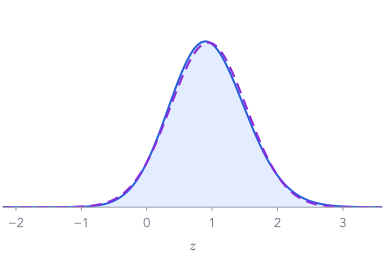
| exact posterior | best $q$ | |
|---|---|---|
| mean of $z$ | 0.94 | 0.94 |
| spread of $z$ | 0.586 | 0.583 |
| chance the next toss is heads | 0.706 | 0.706 |
The leftover gap, 0.0019 nats, is the posterior's slight right skew, which no bell curve can match.
VI found, without ever computing $p(x)$, an answer that matches the exact one to two decimals. Part 7: shapes where it cannot.
A check where the answer is known (from the PML course)
On Part 1's coin, a Beta $q$ finds the exact posterior
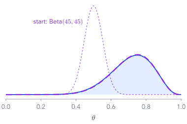
Back to the $\mathrm{Beta}(2,2)$ prior on $\theta$, whose posterior we know: $\mathrm{Beta}(10, 4)$.
Let $q = \mathrm{Beta}(\alpha, \beta)$, start at $\mathrm{Beta}(45, 45)$, and run the same loop: rsample, 100 draws per step, Adam, 3,000 steps.
It ends near $\mathrm{Beta}(10.24,\ 4.06)$: ELBO −6.167 against $\log p(x) = −6.167$, a gap of 0.0002 nats.
When the family contains the posterior, VI finds it. The gap is a measure of how much the family is missing.
Part 7 of 8
Two numbers and beyond: where a simple $q$ falls short
The VAE's $q$ is a Gaussian with one width per coordinate, and no tilt. Fit that kind of $q$ to shapes in a plane, and see exactly what it gets wrong, and why.
- ✓Bayes: prior, likelihood, posterior
- ✓Why the posterior is hard
- ✓Averages from samples
- ✓KL divergence
- ✓Variational inference and the ELBO
- ✓Climbing the ELBO: gradients through samples
- 7Beyond one number
- 8Many data points: towards the VAE
A tilted target, a $q$ that cannot tilt
Mean-field $q$ on a correlated Gaussian: too narrow
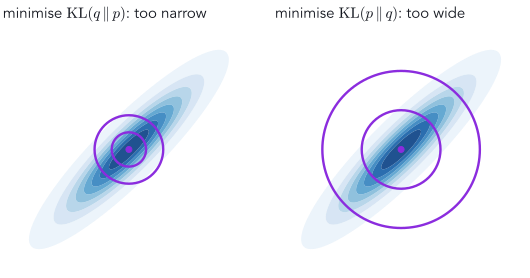
One width per coordinate, independent under $q$: mean-field. Target: correlation $\rho = 0.9$, each coordinate's spread 1.
Left, VI's direction: $q$ must not put mass where $p$ is thin, so it shrinks inside the ellipse. Width $\sqrt{1-\rho^2} = 0.436$, not 1.
Right, the other direction: wide enough to cover, width 1, but lots of mass where $p$ has none.
Mean-field VI underestimates uncertainty. Both fits pay the same KL here, 0.830 nats, by opposite mistakes.
Give $q$ a tilt
A full-covariance $q$ fits the tilted target exactly
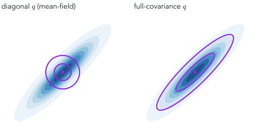
Reparameterisation in 2-D: one extra number, $\ell_{21}$, lets $q$ tilt.
Both fitted by the same loop (reverse KL, rsample, Adam). Diagonal: KL 0.828. Full: KL 0.000, correlation 0.90.
With $d$ numbers in $z$: $d$ widths for a diagonal $q$, $d(d+1)/2$ for a full one. The VAE keeps diagonal: cheaper, and its decoder adapts.
Try it
Three targets, two kinds of $q$, press play
step 0 · widths 0.50, 0.50 · correlation 0.00
$\KL(q\,\|\,p) =$ —
Reverse KL, reparameterised gradients, 32 draws per step. For two bumps, the start decides which bump.
A curved target
A Gaussian can stretch and tilt, but it cannot bend
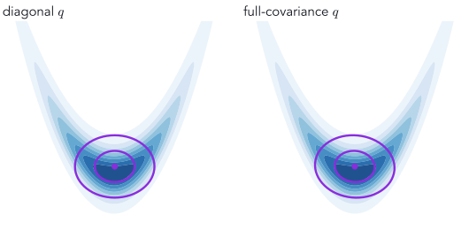
A banana: $z_1 \sim \N(0, 1.2^2)$, then $z_2$ centred on the curve $0.6\,z_1^2 - 1.2$.
Diagonal $q$: KL 0.542. Full $q$: KL 0.542. The same.
The banana is symmetric, so the best tilt is no tilt. Both $q$'s sit in the bend and miss the arms.
More parameters of the same kind do not help. The family is the limit, not the optimiser.
Two separate bumps, in a plane
Reverse KL picks one bump, and pays $\log 2$
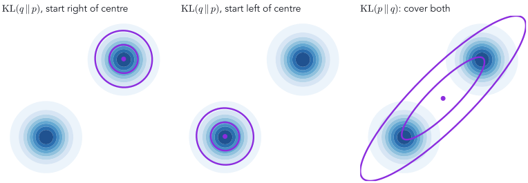
Start a little right of centre: the upper bump, KL 0.691. A little left: the lower bump, KL 0.691. Both $\approx \log 2 = 0.693$.
$q$ fits half of $p$ perfectly and ignores the other half: $\log 2$ is the price of missing half the mass. The forward KL covers both, through the empty middle.
Back to one number
The gap is the KL that no Gaussian can remove
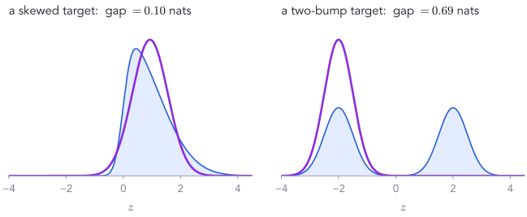
Skewed target: the best Gaussian, $\N(0.93,\ 0.62^2)$, leaves 0.10 nats.
Two bumps: the best Gaussian is one bump, $\N(−2.0,\ 0.50^2)$, and leaves 0.693 nats $= \log 2$.
The ELBO can never reach $\log p(x)$ here: the gap stays at least this big, whatever the optimiser does.
The fix: a richer $q$
Push simple noise through a curve: a flow
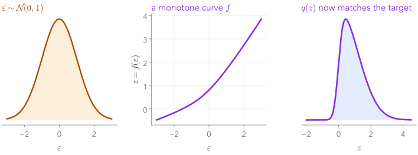
$z = f(\eps)$ with $\eps \sim \N(0, 1)$ and $f$ monotone. The right curve makes $q$ match the skewed target exactly.
Normalizing flows learn $f$ as an invertible neural network, so $\log q(z)$ stays computable. Reparameterisation still works: $z$ is a differentiable function of $\eps$.
Richer families (flows, mixtures) shrink the gap; the ELBO and the loop do not change at all.
Part 8 of 8
Many data points: learn to predict $q$
So far: one coin, one $q$, 400 steps. A dataset has thousands of items, each with its own posterior. Running VI separately for each is wasteful. Learn a function from the data to $q$ instead.
- ✓Bayes: prior, likelihood, posterior
- ✓Why the posterior is hard
- ✓Averages from samples
- ✓KL divergence
- ✓Variational inference and the ELBO
- ✓Climbing the ELBO: gradients through samples
- ✓Beyond one number
- 8Many data points: towards the VAE
A dataset of coins
500 coins, each with its own hidden $z$
For each coin $n$: draw $z_n \sim \N(0, 1)$, toss it 10 times with $\theta_n = \mathrm{sigmoid}(z_n)$. The data: $x_n$, its ten tosses.
Each coin has its own posterior $p(z_n \mid x_n)$, and so its own best $q_n = \N(m_n, s_n^2)$.
Per-coin VI: 500 separate loops of 400 steps. A new coin: another loop.
how many coins showed each number of heads
But each coin's best $q$ depends only on its tosses. So learn the map from $x$ to $(m, s)$ once.
Amortised inference
An encoder: a small network from $x$ to $q$'s two numbers
m, log_s = encoder(X).unbind(-1) # X: [500, 10] tosses, one row per coin z = m + log_s.exp() * torch.randn(500) # one draw per coin rec = h * F.logsigmoid(z) + (10 - h) * F.logsigmoid(-z) # h: heads per coin kl = 0.5 * (m**2 + (2*log_s).exp() - 1 - 2*log_s) loss = -(rec - kl).mean() # minus the average ELBO
Train the encoder's weights on the average ELBO over all coins: 3,000 Adam steps, one draw per coin. Then one forward pass gives any coin's $q$.
Does it work?
One pass of the encoder ≈ 400 steps of VI per coin
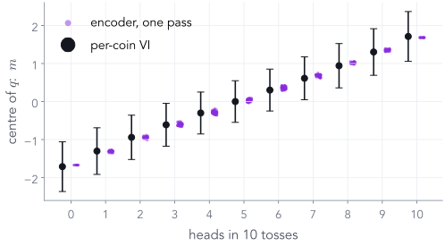
Black: per-coin VI, centre $m$ with $\pm s$. Purple: the encoder's $m$ for each of the 500 coins.
For the 33 coins with 8 heads: VI gives $m = 0.94$, the encoder 1.02; both give $s = 0.58$.
ELBO lost per coin, on average: 0.0045 nats (at most 0.031). That loss is the amortisation gap.
That network is the VAE's encoder. The VAE also learns the decoder (here sigmoid$(z)$ was fixed), on the same ELBO.
Recap
What the VAE lecture will reuse
| today, on toys | in the VAE |
|---|---|
| prior $p(z) = \N(0, 1)$ on one number | $p(z) = \N(0, I)$ on a code of a few numbers |
| likelihood through $\mathrm{sigmoid}(z)$ | the decoder network: 784 pixel probabilities |
| posterior with no formula; evidence intractable | the same, for every image |
| $\log p(x) = \ELBO + \KL(q\,\|\,\text{posterior})$ | the loss is $-\ELBO$ |
| $\E_q[\log p(x\mid z)]$ from a few draws | the reconstruction term, one draw per image |
| $\tfrac12(m^2 + s^2 - 1 - \log s^2)$ | the KL term, one per code coordinate |
$z = m + s\eps$, rsample | $z = \mu + \sigma\odot\eps$ |
| diagonal $q$ is too narrow on tilted posteriors | the VAE's $q$ is diagonal |
| an encoder from $x$ to $(m, s)$ | the VAE's encoder, $q_\varphi(z\mid x)$ |
Next lecture: the same few lines of loss, with an image in place of ten tosses, and a decoder that is learned too.
Before you leave
Five questions
- Why can't we compute $p(z\mid x)$ for the one-number decoder? The evidence $\int p(z)\,p(x\mid z)\,dz$ has no formula. A grid works in 1-D but explodes with dimension.
- $\log p(x) = \ELBO(q) + \,?$ $\KL(q\,\|\,p(z\mid x)) \ge 0$. So the ELBO is a lower bound, and since $\log p(x)$ does not depend on $q$, raising the ELBO shrinks the KL.
- Why does VI minimise $\KL(q\|p)$, not $\KL(p\|q)$? KL averages under its first argument: we can draw from $q$, not from the posterior. The price: $q$ is mode-seeking and often too narrow.
- What does reparameterisation buy? Gradients through random draws, with far less noise than the score function: 22× fewer draws on the toy, 13× on the coin.
- A diagonal Gaussian $q$ fitted to a correlated target comes out too ...? Narrow: width 0.436 instead of 1 for $\rho = 0.9$.